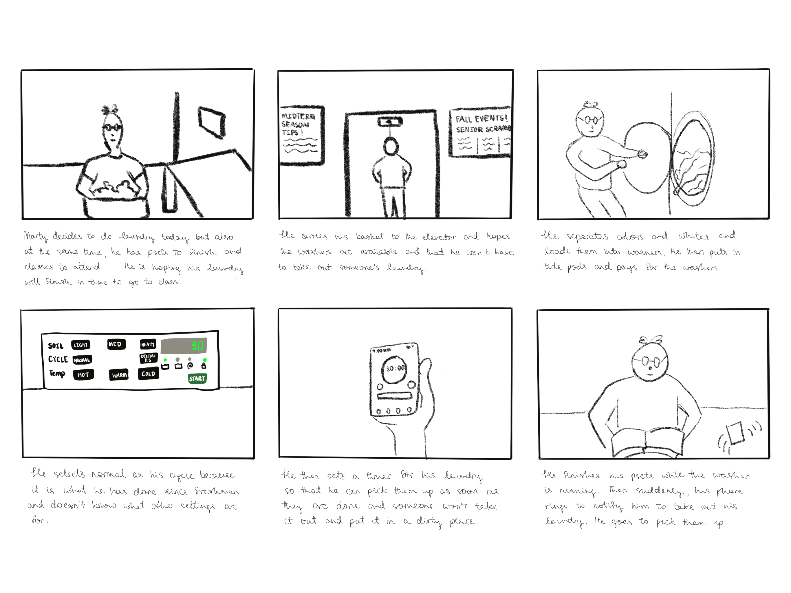

Washing machine interfaces vary by model and brand but their key components function similarly. The interface includes the following:
A washing machine can be a front loading or a top loading washing machine. User experience differs based on the type. For instance, there is no dispenser drawer for a top loader and liquid detergent must be added directly on top of clothes. However, for a front loader, there is a dispenser drawer and users add liquid detergent into it. The washing machine displays vary widely based on the make. For general washing machines at Brown dorms, the options are quite limited with available selections such as normal, delicates, water temperature, etc. Some washers that are newer do allow for the selection of soil level.
The purpose of the overall interface is to load a washing machine with clothes and detergent and select a cycle to wash the clothes.
From my observations, it is obvious that students do not know how to use customizable settings nor their purposes. For instance, all the surveyed students do not know what water temperature does to their clothes. Moreover, there are two main types of students. The first will always set a timer and pick their clothes up on time. The second will not set a timer and may likely not pick their clothes up on time. These are the main overarching observations.
From my observations, there are mainly two categories. Some were very punctual about picking up their laundries as soon as they were done. These people will even set up a timer for their laundry. Some people do not set up a timer and picking them up right away is not a priority for them. Instead they take the laundry out when it is convienent for them to do so.
Most people did not understand the settings and their purposes. For instance, some did not understand the purpose of different water temperature settings or what spin level does to their laundry. Instead they usually defer to the default settings such as normal or delicates.
This sort of ties in with the first point about punctuality. Some people purposedly set time aside for their laundry while some are trying to fit laundry chores into their already busy schedules. For people with busy schedules, some need to be punctual with picking up their laundry so that they can put them in the dryer before someone takes it out and put it in a dirty place, further lengthing their already busy schedule.
During my observations, it seems some dorms are undergoing renovations and are not charging for their new washers. This leads to some doing their laundry more often than they usually would which leads to less loading into a single washer but due to more frequent laundry runs, this also leads to them not being punctual with their pick ups.
Some students have to bring down their laundry in bags or baskets on huge flights of stairs while some easily carry them in elevators. This causes a huge shift in laundry behavior as students who have to use the stairs usually only want to take out the laundry as part of another trip (e.g: getting food)
Meticulous Marty is an upperclassman who has already navigated a confusing freshman year. Today he is doing his laundry while attending lectures and finishing up his homework so time and preciseness are important here. He cannot afford to wait for a washer to become available. He also cannot deal with the washer transferring colors between clothes or not drying the clothes out properly.
This persona represents the users of my chosen interface, washing machine, by representing students who are familiar with the dorm washing machines and are punctual with taking their laundry out on time. Even though they are familiar with the washing machines, they still do not understand some customization settings such as spin level and water temperature.
Confused Freshman is as the name suggests, a freshman who has never used college dormitories' washing machines. Today he is doing his laundry and his goal is to wash all his piles of clothes in as few washing machines as possible so that he can save money. Since today is a weekend, he is not in a rush.
This persona represents the other half of the users of my chosen interface, washing machine, by representing students who are very unfamiliar with the settings of the washing machine and are not in a rush to take their clothes out once its done. These users are also infrequent users of this interface as they only do their laundries once every 2 weeks.
Storyboard for Persona 1: Meticulous Marty
Thank you for reading!